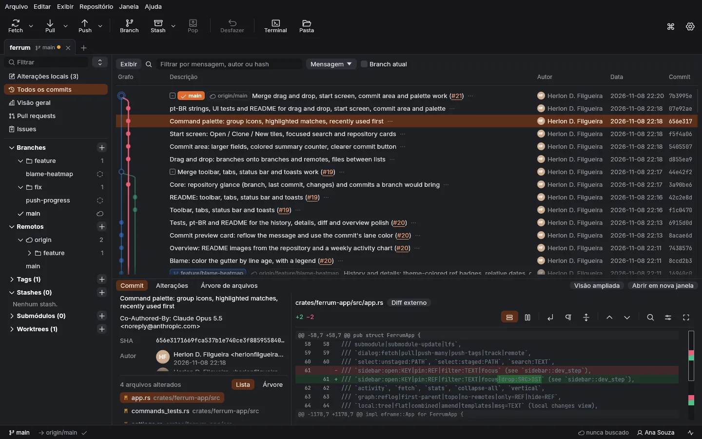
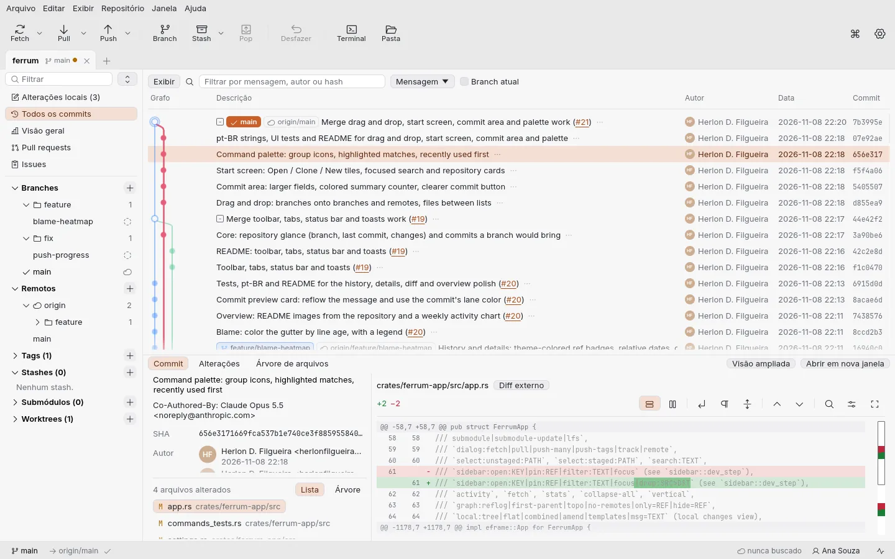
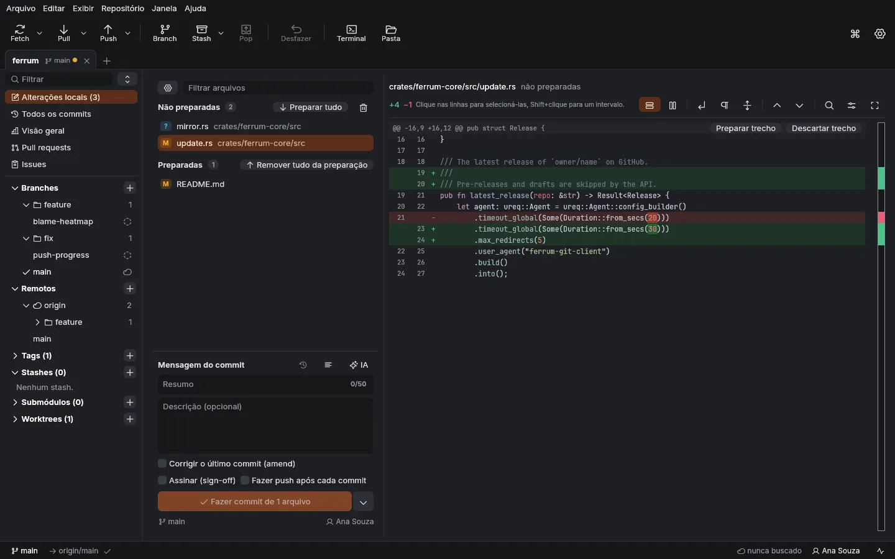
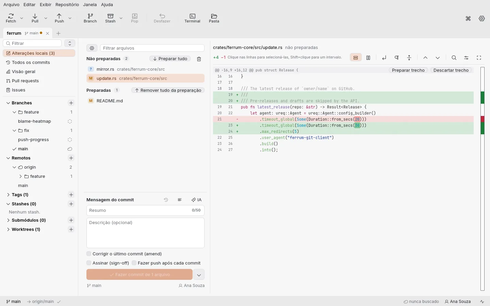
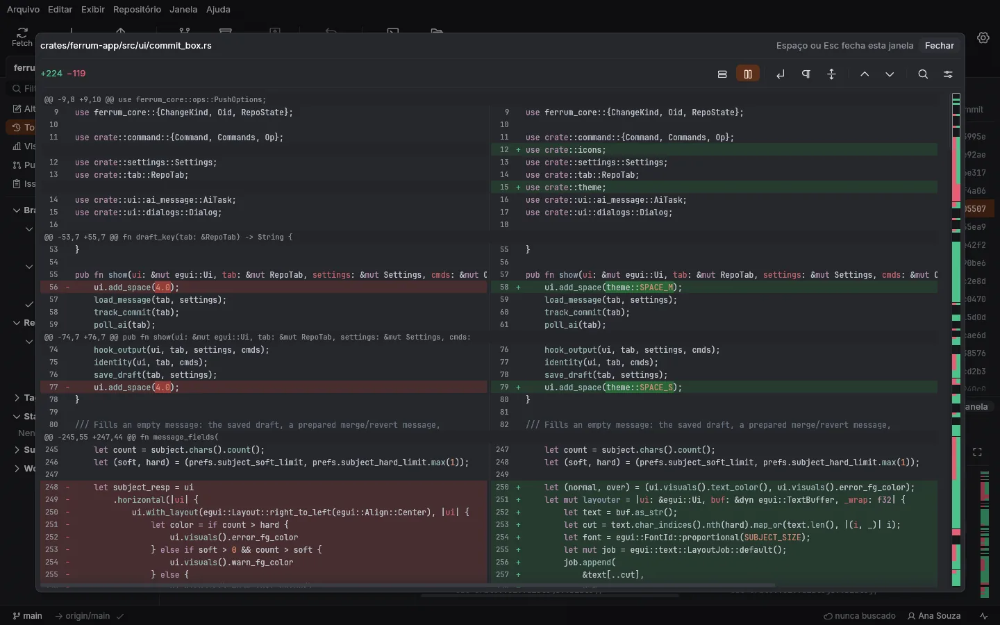
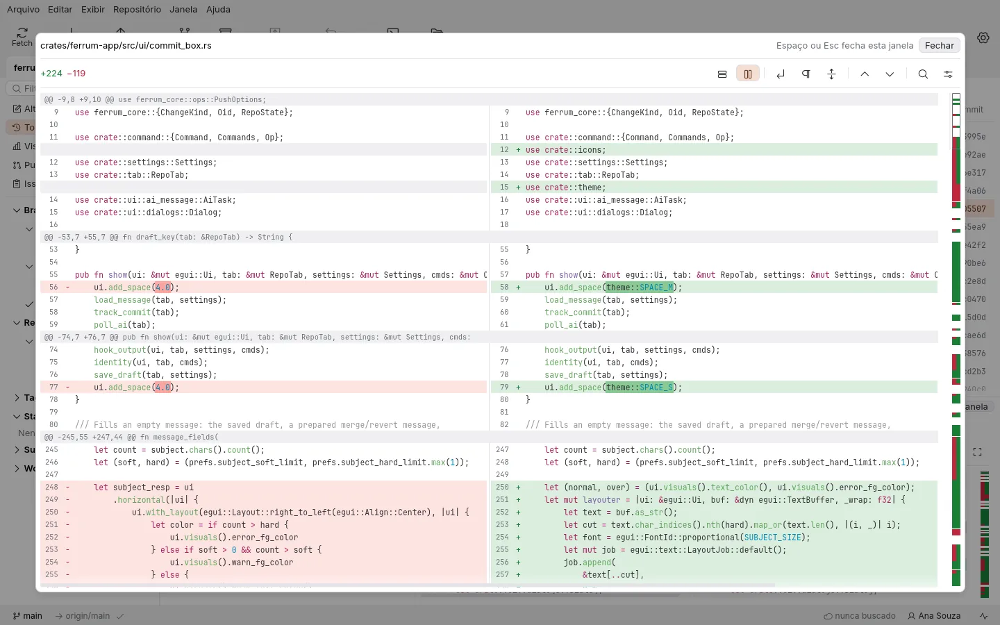
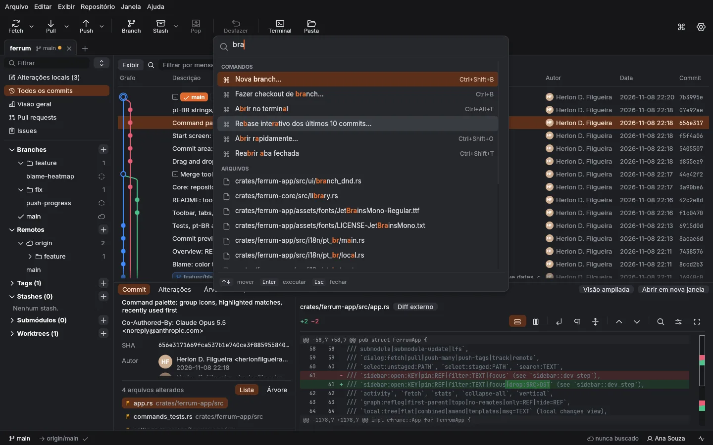
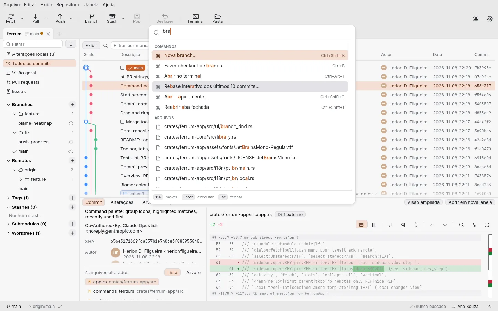
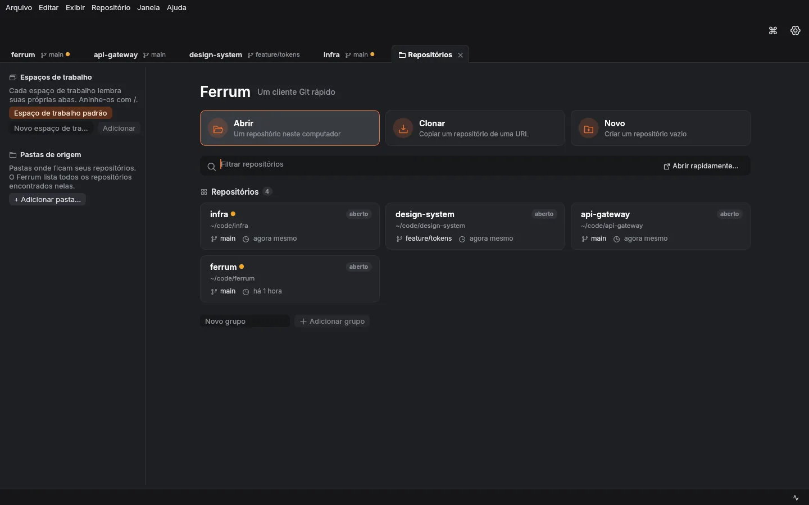
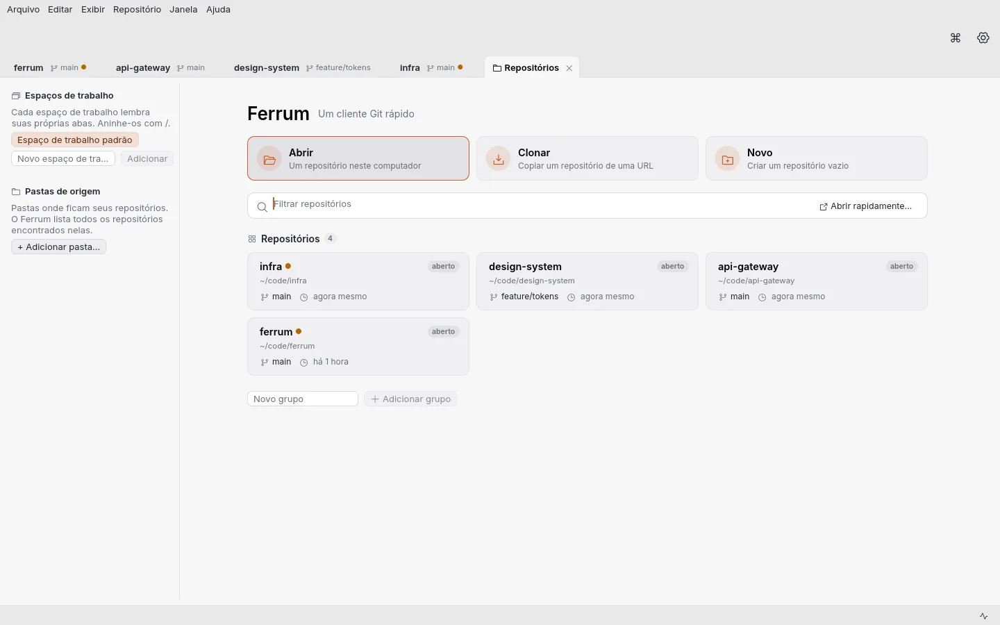

Git, rápido.
Sem assinatura.
Ferrum é um cliente Git nativo escrito em Rust. Um grafo de histórico claro, stage até de linhas soltas, rebase interativo arrastando commits e um resolvedor de conflitos de três vias, sem conta e sem telemetria.
MIT ou Apache-2.0 · Sem login · Português e inglês


Tudo o que você faz no dia a dia, a um clique
Capturas de tela reais do Ferrum, no tema que você está usando agora. Elas trocam sozinhas; clique para escolher.








Feito para o trabalho diário em repositórios de verdade
O Ferrum lê com a libgit2, pela velocidade, e escreve com o seu próprio git, então hooks, credential helpers, SSH e LFS funcionam exatamente como no terminal.
Histórico que continua legível
Faixas coloridas, merges recolhíveis, ordem first-parent e topológica, reflog e filtros de branches salvos por repositório.
Stage de linhas, não só de arquivos
Escolha trechos ou linhas soltas no diff, descarte o que não quer, faça amend, sign-off e push depois do commit.
Rebase interativo arrastando
Reordene, junte (squash), corrija (fixup), reescreva e remova commits num planejador, com prévia de conflitos antes de rodar.
Resolvedor de conflitos de três vias
Escolha por conflito, edite o resultado, resolva imagens, arquivos LFS e submódulos, e desfaça uma resolução.
Pull requests e issues
Contas do GitHub, GitLab, Bitbucket, Azure DevOps e Gitea: liste, faça checkout e crie pull requests, navegue pelas issues e veja as notificações do GitHub.
Nada escondido
A janela Atividade mostra cada comando git que o Ferrum rodou, com a saída. Operações longas podem ser canceladas.
Desfazer
Ctrl+Z desfaz commits, checkouts, mudanças de branches e tags, merges e rebases.
Teclado em primeiro lugar
Uma paleta de comandos, Abrir rapidamente para repositórios e atalhos que você pode mudar para tudo.
Nativo e leve
Um binário Rust desenhado pela GPU, sem Electron. Temas escuro, claro e de alto contraste, Inter e JetBrains Mono.
Novo
Já vem no Ferrum, sem plugins nem assinatura.
Diff estrutural
Diffs que entendem a sintaxe do código, para que código movido ou reformatado apareça como realmente é.
Merge semântico
Conflitos resolvidos levando em conta a estrutura do código, não só as linhas.
Branches empilhadas
Trabalhe numa cadeia de branches dependentes e mantenha todas rebaseadas com uma ação.
Desfazer qualquer coisa
Uma linha do tempo de cada operação com pontos de restauração, para que qualquer mudança possa ser desfeita.
Como o Ferrum se compara
Só preenchemos uma célula quando conseguimos conferir. Os dados dos concorrentes vêm dos sites deles; o que não conseguimos confirmar está marcado. Correções são bem-vindas.
| Ferrum | Fork | GitKraken Desktop | Sourcetree | |
|---|---|---|---|---|
| Preço | Gratuito | USD 59,99 pagamento único, avaliação gratuita | Plano gratuito e planos pagos † | Gratuito |
| Linux | Sim | Não | Sim † | Não |
| Windows | Sim | Sim | Sim † | Sim |
| macOS | Sim | Sim | Sim † | Sim |
| Código aberto | Sim (MIT / Apache-2.0) | Não | Não | Não |
| Funciona sem conta | Sim | Não informado | Exige login † | Não informado |
| Rebase interativo | Sim | Sim | Não verificado | Sim |
| Stage de linhas soltas | Sim | Sim | Não verificado | Sim |
| Resolvedor de conflitos embutido | Sim | Sim | Não verificado | Não informado |
| Pull requests no app | GitHub, GitLab, Bitbucket, Azure DevOps, Gitea | Não informado | Não verificado | Não informado |
| Desfazer operações | Sim | Não informado | Não verificado | Não informado |
| Registro dos comandos git exatos | Sim | Não informado | Não verificado | Não informado |
| Diff estrutural (entende a sintaxe) | Sim | Não informado | Não verificado | Não informado |
| Abrir até o histórico carregado, git/git (86 mil commits) | 0,74 s | Não medido | Não medido | Não medido |
“Não informado”: o site do fabricante (git-fork.com, sourcetreeapp.com, consultados em novembro de 2026) não diz nem sim nem não.
† O site do GitKraken recusou nossa verificação automática; estas células vêm do material público dele como o conhecíamos e podem estar desatualizadas. Células “Não verificado” não foram conferidas.
Não medimos o desempenho dos outros clientes. O número do Ferrum vem do scripts/benchmark.sh, abaixo. Achou um erro? Abra uma issue.
Medido, não prometido
Números do scripts/benchmark.sh no próprio repositório do git (86.059 commits), numa máquina. Rode o script nos seus repositórios para ter os seus.
Da abertura até o grafo do histórico carregado na tela
Memória do app inteiro com esse repositório aberto
Recarregar: refs, os primeiros 10.000 commits, grafo e status
Filtrar 10.000 commits por texto enquanto você digita
Todas as etapas
git/git at fb255012ac: 86,059 commits, 1,022 refs, 4,864 files Linux x86_64, AMD Ryzen 9 9950X, 60 GB RAM, SSD, warm disk cache `ferrum --benchmark` (best of 5) step best average loaded open 0.2 ms 0.2 ms branches 0.5 ms 0.5 ms 9 tags 9.4 ms 9.7 ms 1011 commits 461.2 ms 533.2 ms 10000 graph layout 12.7 ms 17.9 ms 196 lanes status 6.5 ms 7.6 ms 0 staged, 0 unstaged all commits 199.2 ms 238.7 ms 86059 all graph layout 199.3 ms 229.8 ms 282 lanes path search 5000.7 ms 5237.9 ms 641 full reload (app) 492.5 ms 517.1 ms text search (page) 2.4 ms 2.6 ms 1588 GUI start to loaded history on screen (median of 5): 0.74 s, 350 MB max RSS
AMD Ryzen 9 9950X, Linux, SSD, cache de disco quente; melhor de 5 execuções. Rolar até o fim carrega os 86.059 commits em 0,2 s, mais 0,2 s para desenhar o grafo. Repositórios maiores, como o kernel Linux, são suportados pelo script (scripts/benchmark.sh linux), mas ainda não foram medidos aqui.
Baixe o Ferrum
Gratuito para todos, para qualquer uso. Os instaladores se atualizam pelo próprio app; os pacotes se atualizam com o sistema.
Linux
AppImage- Debian, Ubuntudeb
- Fedora, openSUSErpm
- Binário (.tar.gz)tar.gz
Ou no terminal, sem root:
curl -fsSL https://raw.githubusercontent.com/herlondf/ferrum/main/get.sh | shWindows
Instalador (.exe)Ou no PowerShell, sem administrador:
irm https://raw.githubusercontent.com/herlondf/ferrum/main/get.ps1 | iexmacOS
Imagem de disco (.dmg)- App (.zip)zip
Um só app para Apple silicon e Intel. Ele ainda não é notarizado: na primeira vez, clique com o botão direito nele e escolha Abrir.
Se um link de download ainda não funcionar, a primeira versão não foi publicada: veja todas as versões ou compile o código com cargo build --release. Cada versão traz as somas SHA-256 em SHA256SUMS. Flathub, winget, Scoop e Homebrew: em breve.